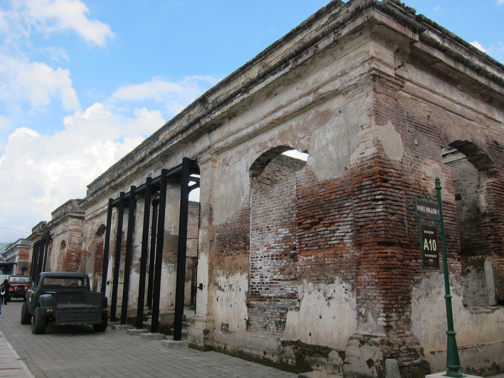
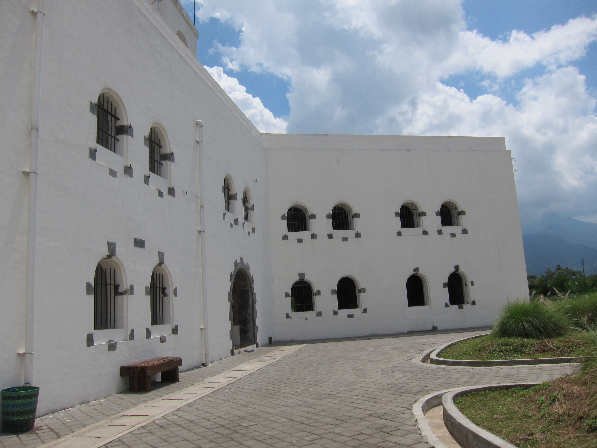
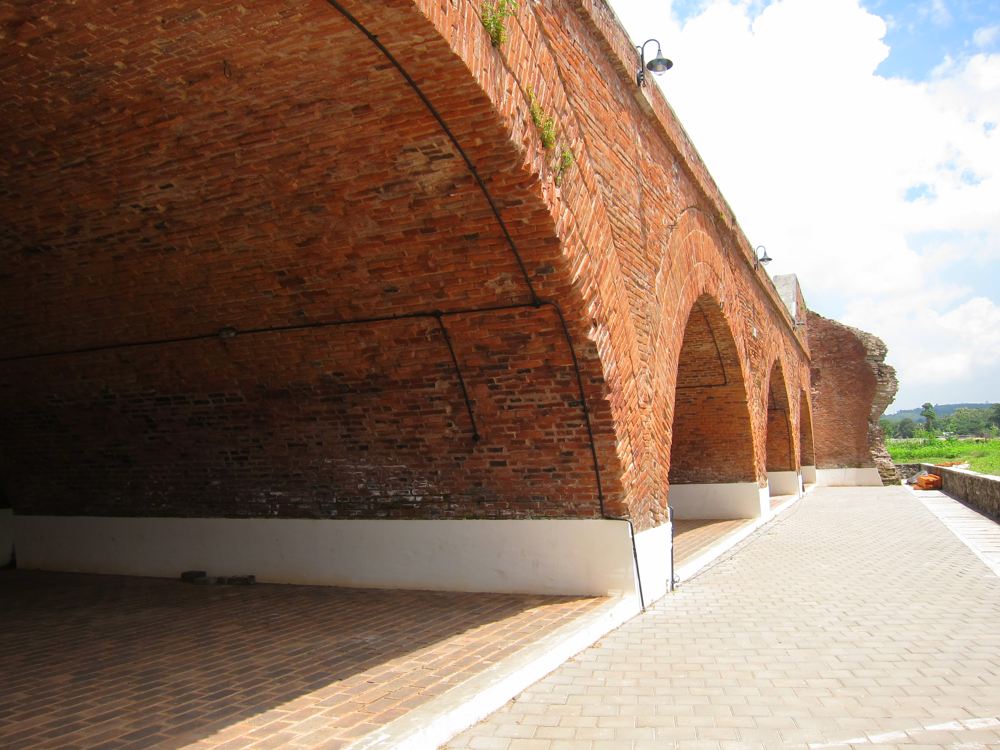
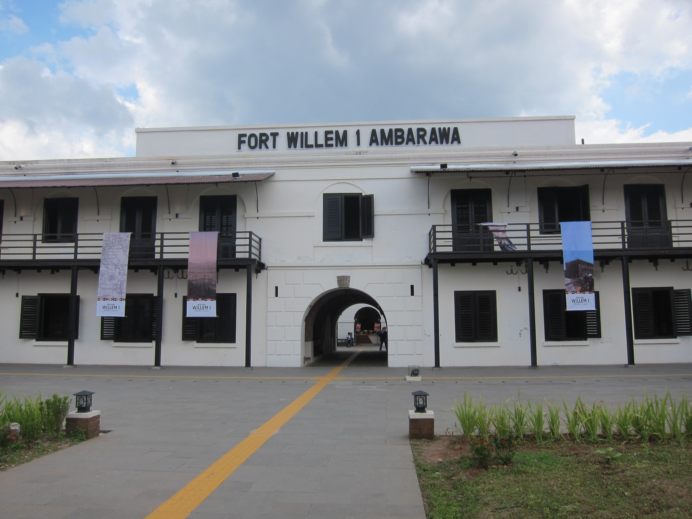
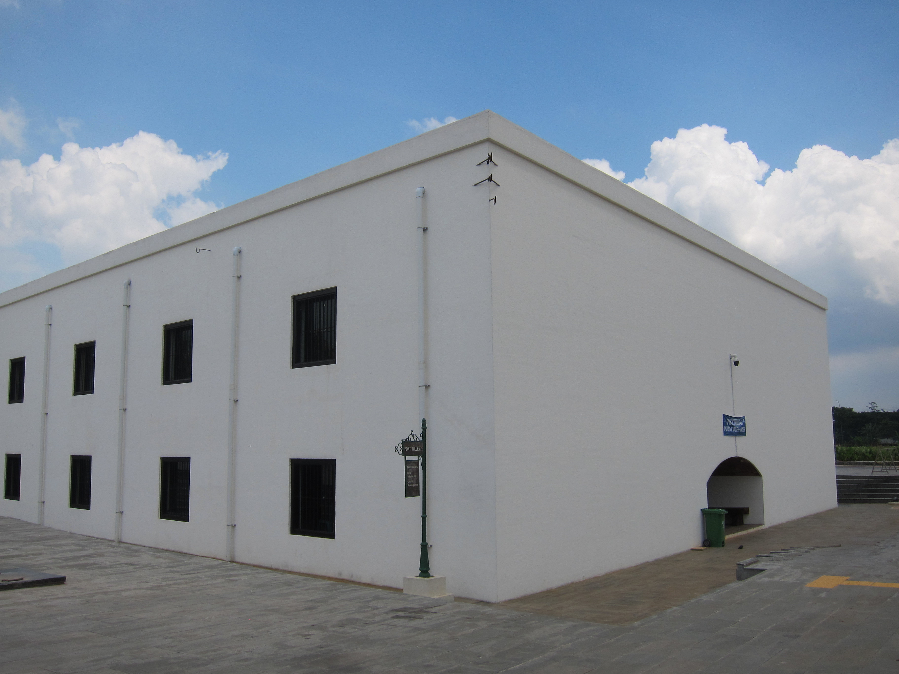

Ayo Kenali Benteng Fort Willem I
Jelajahi sejarah, arsitektur, dan keindahan Benteng Fort Willem I di Ambarawa
Sejarah Benteng Fort Willem I
Benteng Fort Willem I adalah sebuah bangunan bersejarah peninggalan kolonial Belanda yang terletak di Ambarawa, Kabupaten Semarang, Jawa Tengah. Benteng ini dibangun pada tahun 1834–1845 atas perintah pemerintah Hindia Belanda dan dinamai menurut Raja Willem I dari Belanda.
Benteng ini awalnya berfungsi sebagai markas militer untuk mengendalikan keamanan wilayah di sekitar Ambarawa dan daerah Kedu. Arsitektur benteng ini memadukan gaya Eropa dengan adaptasi iklim tropis, menghasilkan bentuk bangunan yang unik dan menarik secara geometris.
Dari sudut pandang matematika, Benteng Fort Willem I kaya akan bentuk-bentuk geometri. Bangunan utamanya terdiri dari balok-balok besar (dinding, ruangan, menara), sementara beberapa pos pengawas berbentuk menyerupai kubus. Konsep volume dan luas permukaan dapat dipelajari secara kontekstual melalui pengukuran dan analisis bagian-bagian benteng.
🏰 Model 3D Benteng Fort Willem I
Model 3D menunjukkan kombinasi bangun ruang kubus (pos jaga) dan balok (barak, gudang, menara) pada arsitektur benteng.
📸 Galeri Foto Benteng

Gerbang Utama Benteng
Arsitektur pintu masuk benteng yang memperlihatkan struktur balok yang kokoh.

Lorong Barisan Ruangan
Deretan ruangan yang membentuk pola geometris berulang di sepanjang koridor benteng.

Struktur Menara Pengawas
Bagian atas benteng yang memiliki bentuk dasar kubus dan balok pada bangunannya.

Detail Batu Bata Heritage
Setiap batu bata adalah balok kecil yang menyusun kekuatan benteng selama ratusan tahun.

Sudut Pandang Arsitektur
Keindahan simetri dan perspektif pada bangunan tua Fort Willem I.

Halaman Tengah Benteng
Area terbuka yang dikelilingi oleh bangunan bersejarah Ambarawa.
📍 Lokasi Benteng Fort Willem I
✨ Fakta Menarik
Tahun Pembangunan
Klik untuk melihat
Benteng Fort Willem I dibangun pada tahun 1834-1845, membutuhkan waktu 11 tahun untuk menyelesaikannya.
Luas Area Benteng
Klik untuk melihat
Benteng ini memiliki luas area sekitar 5 hektar dengan berbagai bangunan di dalamnya yang berbentuk balok dan kubus.
Fungsi Awal
Klik untuk melihat
Awalnya berfungsi sebagai markas militer dan tempat penahanan tentara, kini menjadi cagar budaya.
Geometri Benteng
Klik untuk melihat
Dinding benteng membentuk pola geometris dengan bagian bastion (sudut) yang unik — gabungan beberapa balok.
Bahan Bangunan
Klik untuk melihat
Dibangun dari batu bata berbentuk balok berukuran sekitar 20cm × 10cm × 5cm — contoh nyata bangun ruang.
Warisan Budaya
Klik untuk melihat
Benteng ini merupakan warisan budaya yang dilindungi dan menjadi sumber belajar etnomatematika.